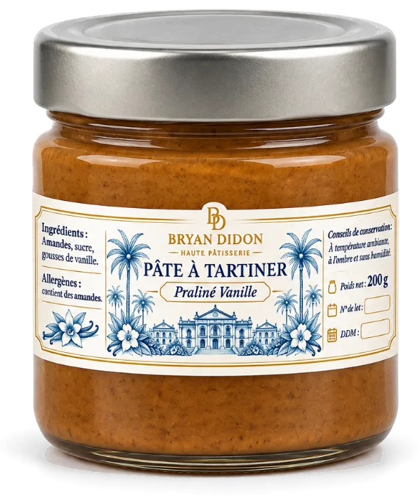

Le praliné
Pâte à tartiner praliné vanille. Pour la cuillère, la tartine, ou rien du tout.
11 € le pot de 200 g
Commander le pralinéCommande en ligne, retrait au laboratoire à l’heure choisie.

Pâte à tartiner praliné vanille. Pour la cuillère, la tartine, ou rien du tout.
11 € le pot de 200 g
Commander le pralinéCommande en ligne, retrait au laboratoire à l’heure choisie.
À compléter
Amandes, sucre, gousses de vanille. À compléter
À compléter
Pot de 200 g
À compléter
Une question sur les allergènes ? Écrivez-nous avant de commander.